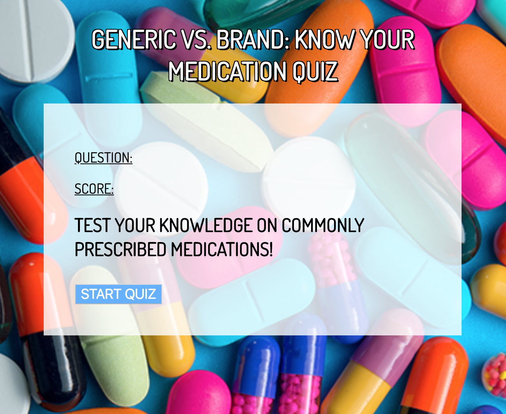

Hey Y'all! I'm Nathaly Cuya, a Thinkful student in the Engineering Flex Program.
About Me
Currently, I am an aspiring front end developer from Texas! I am a recent graduate from the University of Texas at Austin with a bachelor's degree in Sociology. Austin has been my home for the past 5 years and on my days off from work/school I like to explore new coffee shops, find new music, and implement new, fun ways to stay fit (currently trying yoga)! My interest in web development stemmed from the mantra that as a developer you are a student for life, constantly learning and solving new challenges. I love that as a programmer, you can build almost any idea from the ground up while also physically seeing the fruit of your labor on a website/app. My goal is to use the technical knowledge I've gained thus far as an outlet to be creative in my future projects while also presenting clean, responsive code. My current focus is mainly front-end based ie. Javascript, Jquery, HTML, and CSS. With time, this list will surely grow!
Projects
Generic VS. Brand: Know Your Medication Quiz App
“Generic VS. Brand” is a short and simple quiz application that tests the users’ knowledge. The app utilizes the following technologies: Jquery, JavaScript, HTML, and CSS. The entire project was then pushed to Github.
